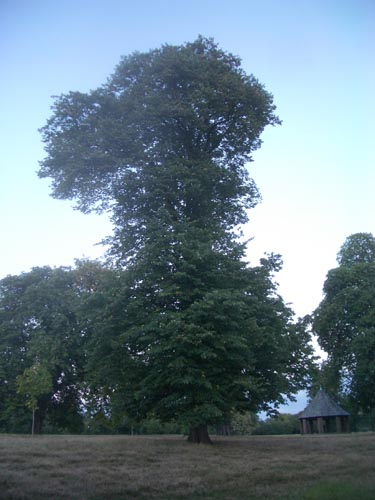

| < | > |
| rambling habits | [2005-08-22 09:53] |
|

usually we walk in the evening - just after dinner - when it's dark and everyone has gone - but when i'm on my own i tend to go just before dark - before dinner - if it's sunday the paths are full with family life - with tourist life - i march round gently mumbling to myself - now you are there you can listen too |
|